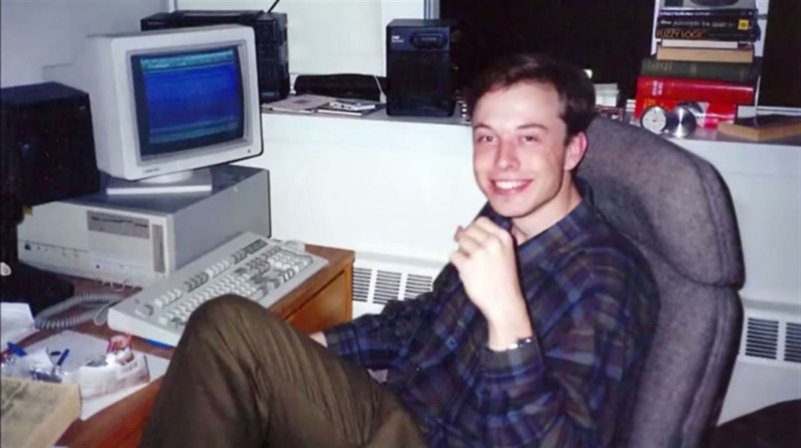

Об Илоне Маске
Википедия- С детства Илон много читал, любил фантастику, от Жюля Верна до Азимова, Хайнлайна и Толкина. Роман Дугласа Адамса Автостопом по галактике помог ему справиться с личностным кризисом в четырнадцать лет, а книги Академия и Луна — суровая хозяйка пробудили в Илоне интерес к космосу.
-
В 19 лет Илон поступил в Королевский университет в Кингстоне, Онтарио. В 1992 году Маск переехал в США и поступил в Пенсильванский университет, где получил степень бакалавра наук по физике колледжа искусств и наук, а также степень бакалавра по экономике Уортон школы бизнеса. Со временем перешел в Стэнфорд, но обучение не закончил.

Обвинения в нарушении закона о ценных бумагах
НаверхОсенью 2018 года ряд трейдеров и акционеров Tesla подали в суд на Маска и обвинили главу компании в нарушении закона о ценных бумагах. Расследованием по данному административному делу занялась Федеральная комиссия по ценным бумагам США (SEC). В иске утверждалось, что Маск намеренно выдавал ложную информацию в Twitter-аккаунте, чтобы повлиять на цену акций Tesla. В своем личном аккаунте глава компании заявил о решении сделать Tesla частной фирмой и о том, что уже нашел финансы для выкупа акций. В сообщениях он также указал на то, что планирует выкупить ценные бумаги из расчёта 420 $ за акцию, то есть выше их рыночной стоимости.
Из-за критики со стороны пользователей социальной сети и акционеров Маск решил оставить Tesla публичной компанией. В сентябре 2018 года Министерство юстиции США параллельно с административным делом завело уголовное дело в отношении компании Tesla. По иску SEC Маску грозит запрет на занятие руководящих должностей в публичных компаниях.
В ответ на обвинения Илон Маск заявил следующее:
Я глубоко разочарован необоснованными обвинениями SEC. Я всегда действовал в интересах инвесторов, и честность — самая важная ценность в моей жизни. Факты докажут, что я никогда и никого не ставил под угрозу.29 сентября 2018 года Маск и SEC урегулировали в досудебном порядке эти обвинения. Согласно договоренности, Маск останется руководителем компании Tesla, однако не сможет занимать пост председателя совета директоров три года. Кроме того, он должен выплатить штраф в размере 20 миллионов долларов. Такой же штраф наложен на компанию Tesla.
Карьера
Наверх
Zip2 — первая компания, которую организовали совместно братья Маск в 1996 году. Они занимались производством программного обеспечения. Их проектом был цифровой аналог Жёлтых страниц
, с помощью которого в любом районе Сан-Франциско можно было найти ближайшую пиццерию. Стартап развивался не так быстро, как хотелось Илону, но трудолюбие позволило вывести его на такой уровень, что им заинтересовались инвесторы. Вскоре фирма Compac приобрела Zip2 за 307 миллионов долларов, 22 миллиона достались лично Илону Маску и он в 27 лет стал миллионером.
В марте 1999 года Илон Маск стал одним из основателей X.com (вложив 12 млн собственных сбережений), намереваясь сделать революцию в сфере банковских платежей. Уже в 2000 году произошло слияние компаний X.com и Confinity, тем самым объединились системы X.com и PayPal. Маск требовал для нового образования бренд X.com вместо PayPal. Это вызвало разногласия внутри организации, и Илон по решению Совета директоров ушел в отставку. Но стратегически и экономически Маск снова сделал верный ход. В октябре 2002 года PayPal была куплена eBay за 1,5 млрд долларов, а Илон за свои 11,7% акций получил 175 млн долларов.
Награды
Наверх- В 2008 году журнал Esquire включил Маска в список 75 наиболее влиятельных людей XXI века.
- В июне 2011 года он был награждён премией Хайнлайна за достижения в коммерциализации космоса в 500 тыс. долларов США.
- В феврале того же года журнал Forbes включил Маска в список 20 наиболее влиятельных американсих CEO в возрасте до сорока лет.
- В ноябре 2013 ода журнал Fortune назвал его предпринимателем года, а The Wall Street Journal назвал Маска CEO года.